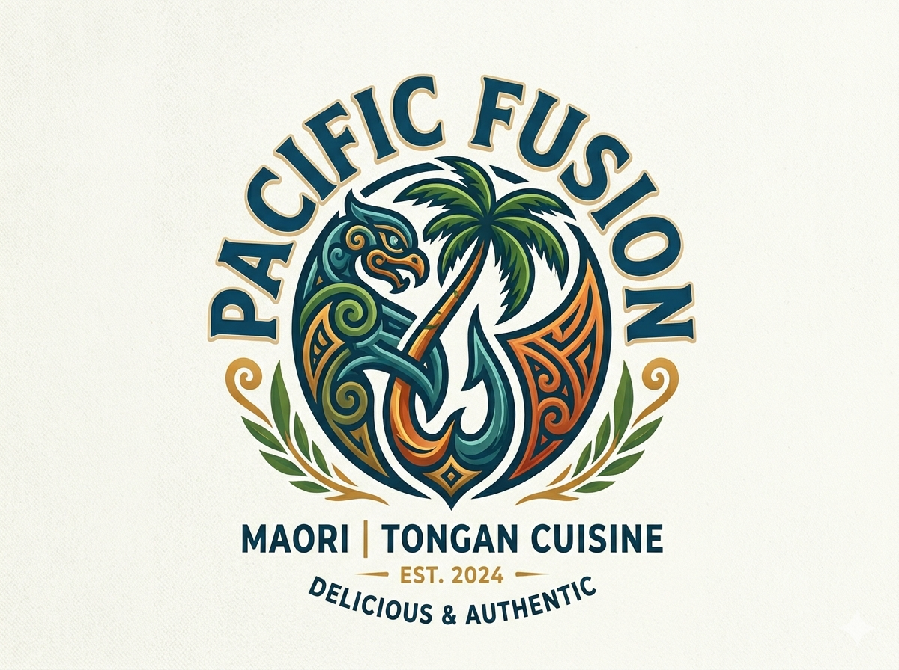
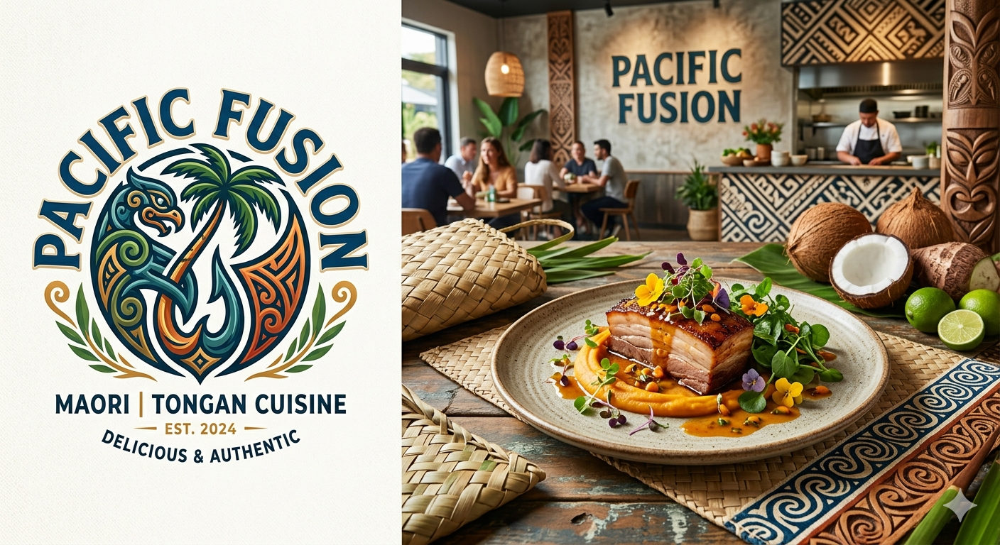

Explore the rich traditions of Maori and Tongan cultural foods, and discover how they connect through culture, family, and identity.

The purpose of this website is to educate users about the rich culinary traditions of the Pacific Islands, specifically focusing on Maori and Tongan cuisines. It also aims to educate users about Maori and Tongan traditional cooking methods, and recipes.
Our vision is to create a vibrant online platform that celebrates and preserves the culinary heritage of the Pacific Islands, fostering a deeper appreciation for Maori and Tongan food culture while inspiring users to explore and share these traditions with others.
Pacific Fusion Cuisine is dedicated to promoting and preserving the rich culinary heritage of the Pacific Islands by providing educational resources and fostering a deeper appreciation for Maori and Tongan traditional foods.
Our core values include cultural respect, authenticity, education, and community. We are committed to honoring the traditions of Maori and Tongan cuisine while providing accurate and engaging content that educates and inspires our audience.
The target audience for this website includes food enthusiasts, cultural explorers, and anyone interested in learning about the unique culinary traditions of the Pacific Islands. It is designed to appeal to a wide range of users, from those with a casual interest in food to those seeking a deeper understanding of Maori and Tongan culture through their cuisine.